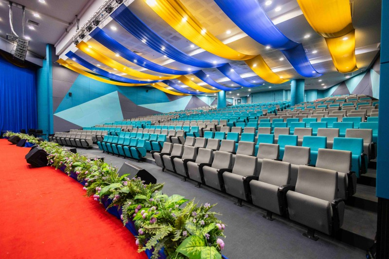
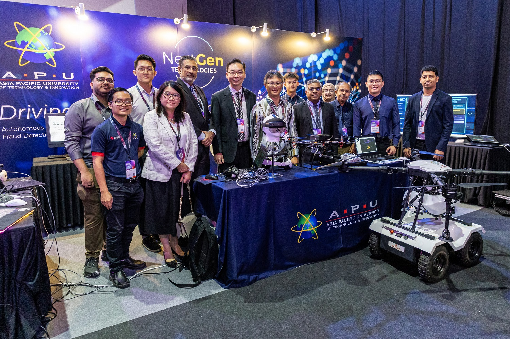

University overview
About Asia Pacific University of Technology & Innovation
Founded in 1993 originally as the Asia Pacific Institute of Information Technology (APIIT), Asia Pacific University of Technology & Innovation (APU) has grown into one of Malaysia's premier private universities. Located in Technology Park Malaysia (TPM), Bukit Jalil, Kuala Lumpur, APU is renowned for offering technology-driven, industry-focused education that prepares graduates for high-demand digital global careers.
APU is ranked #=528 in QS World University Rankings 2027. APU holds a QS 5-Stars Plus rating. Recognized by MDEC as a Premier Digital Tech Institution, APU partners with industry leaders like Microsoft, AWS, Cisco, and IBM, and offers dual degrees with De Montfort University (DMU), UK.


.jfif)

International students
Study at Asia Pacific University of Technology & Innovation as an international student
Explore Asia Pacific University of Technology & Innovation in Malaysia. Compare the exact computing or other qualification, its entry requirements and award options before choosing your intake.
Programmes and tuition
Asia Pacific University of Technology & Innovation APU courses and fees for international students
| No | Programme | Duration | Total Tuition Fees |
|---|---|---|---|
| 1 | APU Foundation Programme (Computing & Technology Pathway, Business, Finance & Social Sciences Pathway, Architecture & Design Pathway) | 1 Year (3 Semesters) | RM 27,900 |
| 2 | APU Foundation Programme (Engineering Pathway) | 1 Year (3 Semesters) | RM 28,500 |
Schedule remarks:
Not applicable to Online-ODL modes.
| No | Programme | Duration | Total Tuition Fees |
|---|---|---|---|
| 1 | Diploma in Information & Communication Technology (incl. specialisms: Software Engineering, Data Informatics, Interactive Technology) | 2 Years (5 Semesters) | RM 52,600 |
| 2 | Diploma in Business Administration | 2 Years (5 Semesters) | RM 52,600 |
| 3 | Diploma in Accounting | 2 Years (5 Semesters) | RM 52,600 |
| 4 | Diploma in Business Information Technology | 2 Years (5 Semesters) | RM 52,600 |
| 5 | Diploma in International Studies | 2 Years (5 Semesters) | RM 52,600 |
| 6 | Diploma in Design and Media | 2 Years (5 Semesters) | RM 52,600 |
| 7 | Diploma in Mechatronic Engineering | 2 Years (5 Semesters) | RM 52,600 |
Schedule remarks:
Tuition fees include Course Fee and Library Fee for the duration of the course.
| No | Programme | Duration | Total Tuition Fees |
|---|---|---|---|
| 1 | Certificate in Administrative Skills | 3 Semesters | RM 21,200 |
| 2 | Certificate in Information & Communication Technology | 3 Semesters | RM 21,200 |
Schedule remarks:
Offered and Awarded by APIIT.
| No | Programme | Duration | Total Tuition Fees |
|---|---|---|---|
| 1 | Computing, Business, Tourism, Accounting & Finance, Actuarial, Banking, International Relations, Media, Psychology | 3 Years | RM 104,600 |
| 2 | Architecture, Industrial Design, Visual Effects, Animation, Digital Advertising | 3 Years | RM 104,600 |
| 3 | Mechatronic, Mechanical, Computer, Electrical & Electronic, Petroleum Engineering | 4 Years | RM 133,200 |
Schedule remarks:
Dual Award Scheme with De Montfort University (DMU) UK requires an additional fee of GBP 425 per level.
| No | Programme | Duration | Total Tuition Fees |
|---|---|---|---|
| 1 | Master of Tech Mgt, IT Mgt, Digital Transformation, Software Eng, Project Mgt, MBA (incl. specialisms), Int. Business Comms, Digital Marketing, Finance, Accounting, Design Innovation, Actuarial Science | 1-1.5 Years (3 Semesters) | RM 38,800 |
| 2 | Master of Science in Artificial Intelligence, Master of Science in Cyber Security | 1-1.5 Years (3 Semesters) | RM 40,800 |
| 3 | MSc in Data Science and Business Analytics | 1-1.5 Years (3 Semesters) | RM 44,800 |
| 4 | Master of Education in Learning Design and Technology | 1-1.5 Years (3 Semesters) | RM 34,000 |
| 5 | Master of Philosophy (MPhil) in Engineering, Management, Computing | Up to 2 Years | RM 29,800 |
| 6 | ODL - Master of Business Administration (incl. specialisms) | 2 Years | RM 31,000 |
| 7 | ODL - MSc in AI, Cyber Security, Data Science & Business Analytics | 2 Years | RM 34,500 |
| 8 | ODL - Master of Education in Learning Design and Technology | 2 Years | RM 27,800 |
| 9 | ODL - Postgraduate Diploma of Education in Learning Design & Tech | 2 Years | RM 17,200 |
| 10 | ODL - Postgraduate Certificate of Education in Learning Design & Tech | Self-Paced | RM 8,800 |
Schedule remarks:
Master's DMU Dual Degree requires an additional GBP 500 fee. Postgraduate fees exclude the 6% SST.
| No | Programme | Duration | Total Tuition Fees |
|---|---|---|---|
| 1 | Doctor of Philosophy (Computing, Technology, Management, Finance, Engineering) | 3-5 Years | RM 46,800 |
| 2 | Doctor of Business Administration (DBA) | 3 Years | RM 54,800 |
| 3 | ODL - Doctor of Philosophy (Computing, Technology, Management) | 3-5 Years (Full-Time) / 4-6 Years (Part-Time) | RM 38,500 |
Schedule remarks:
Each additional year (beyond 3) charged at RM 7,500 (Full-time). ODL additional year charged at RM 5,800 (Full-time) or RM 4,800 (Part-time).
| No | Programme | Duration | Total Tuition Fees |
|---|---|---|---|
| 1 | APU Intensive English Language Programmes (7 Levels) | 4 Weeks (Per Level) | RM 2,650 (Per Level) |
Schedule remarks:
Fee includes English Preparation book.
Download fee schedule (ZIP)
Stored fee document for Asia Pacific University of Technology & Innovation (APU). Check the printed validity and terms.
APU rankings: QS World, Asia & Malaysia
Verified . Each figure below names its ranking edition.
- QS World 2027
- #=528
- QS Asia 2026
- #147
- Malaysia · QS World 2027
- #12
Malaysia positions are calculated among the 32 institutions listed by QS under Malaysia in its World 2027 table. This is not a separate government ranking. An = sign marks a tie. Institutions in the same world-rank band share a national position range because their exact order is not published.
QS World and QS Asia use different methods. Overall university positions do not establish the ranking of a particular BBA, IT, MBA or other program.
Explore the campus
Campus gallery
Questions and answers
Frequently Asked Questions About Asia Pacific University of Technology & Innovation APU
Programme examples in the stored fee schedule
These examples retain the stored schedule's wording. They are not a complete course catalogue or confirmation of the next open intake. Use the official programme sources below to confirm current availability.
| Programme | Schedule section | Duration | Intake in schedule | Tuition |
|---|---|---|---|---|
| Diploma in Information & Communication Technology (incl. specialisms: Software Engineering, Data Informatics, Interactive Technology) | DIPLOMA PROGRAMS | 2 Years (5 Semesters) | Confirm for this programme | View relevant fee section |
Which Asia Pacific University does this guide cover?
This guide covers Asia Pacific University of Technology & Innovation in Bukit Jalil, Kuala Lumpur, Malaysia. It does not cover other institutions using the Asia Pacific University name or APU abbreviation.
Are APU international merit awards automatic?
No automatic award is established by this guide. APU publishes international merit-award conditions and retains award discretion. Check your qualification, eligible programme and continuation requirements against the current official terms.
View ranking sources
Asia Pacific University of Technology & Innovation (APU) - QS profile · QS World University Rankings 2027 - official results spreadsheet (v1.1) · APU 2026 brochure - QS Asia 2026 results · QS World University Rankings 2027 - release corrections
What is the QS World ranking of Asia Pacific University of Technology & Innovation (APU) in 2027?
APU is ranked #=528 in QS World University Rankings 2027.
Sources: Asia Pacific University of Technology & Innovation (APU) - QS profile · QS World University Rankings 2027 - official results spreadsheet (v1.1)
What is the QS Asia ranking of Asia Pacific University of Technology & Innovation (APU) in 2026?
APU is ranked #147 in QS Asia University Rankings 2026.
What is the ranking of Asia Pacific University of Technology & Innovation (APU) in Malaysia?
APU has Malaysia position #12 among the 32 institutions listed under Malaysia in QS World 2027, calculated from the published table. This is a position within the QS World table, not a separate government ranking or a QS Asia position.
Sources: QS World University Rankings 2027 - official results spreadsheet (v1.1) · QS World University Rankings 2027 - release corrections
Do QS Stars, SETARA or partner rankings give Asia Pacific University of Technology & Innovation (APU) an overall QS rank?
QS Stars and SETARA are ratings, not numerical positions in a QS league table. A subject ranking applies to that subject, and a partner university rank belongs to the named partner. Check the institution, ranking system and edition before comparing.
Sources: QS Stars rating system
How much is APU Malaysia tuition per semester?
Where the chart gives total tuition, it does not establish the amount invoiced each semester. Select your programme and obtain its payment schedule; dividing the total into equal instalments can misstate the amount due.
Is APU Malaysia expensive for a Bangladeshi student?
Compare the exact programme's tuition and compulsory charges with your available budget, then allow separately for accommodation and living costs. Assess any scholarship only after its eligibility and continuation conditions are confirmed.
What are APU's tuition fees for Bangladeshi students?
Bangladeshi applicants should check the international-student rate for their program and intake. This page does not establish a separate Bangladesh-only tuition rate or guarantee eligibility for a discount. Check nationality-specific charges, deposits, visa costs and scholarship conditions in the schedule and your written offer.
Where can I find the official APU fee chart?
The download links on this page open the stored fee documents. One-Step is a student guidance website. Confirm the document's edition, campus, student category and validity with the university before accepting an offer or paying. The university's current written fee schedule and offer determine the amount payable.
Which year do the APU fees apply to?
Use any effective dates and intake restrictions stated in the fee documents and course remarks. A single validity year has not been confirmed for every table on this page. A recent page update does not mean all underlying fees are for the current year.
Does APU offer scholarships for international students?
Check any scholarship, adjusted tuition or discount columns alongside their conditions. A listed reduction is not an automatic award for every international or Bangladeshi applicant. Ask for the scholarship name, eligibility, application deadline, renewal conditions and final payable fee in writing.